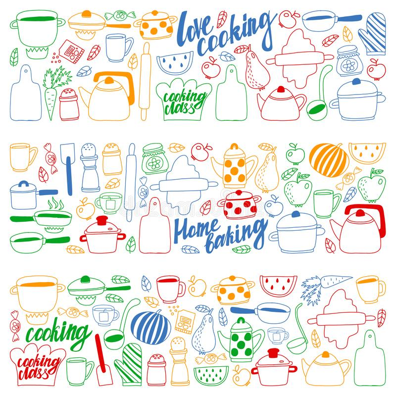

Bienvenid@s a Machaditos Master Chef!
Aquí encontraréis el índice con todo lo necesario para crear una deliciosa receta en lengua extranjera :-)
Enjoy your meal!
https://view.genial.ly/6405a3c00d230700130e668d/presentation-machaditos-master-chefFuente imagen: https://es.dreamstime.com/ sistema-del-vector-de-la- cocina-y-cocinar-los-ni%C3% B1os-iconos-dibujos-en-estilo- garabato-pintado-colorido-im% C3%A1gene-im%C3%A1genes-un- image140578694